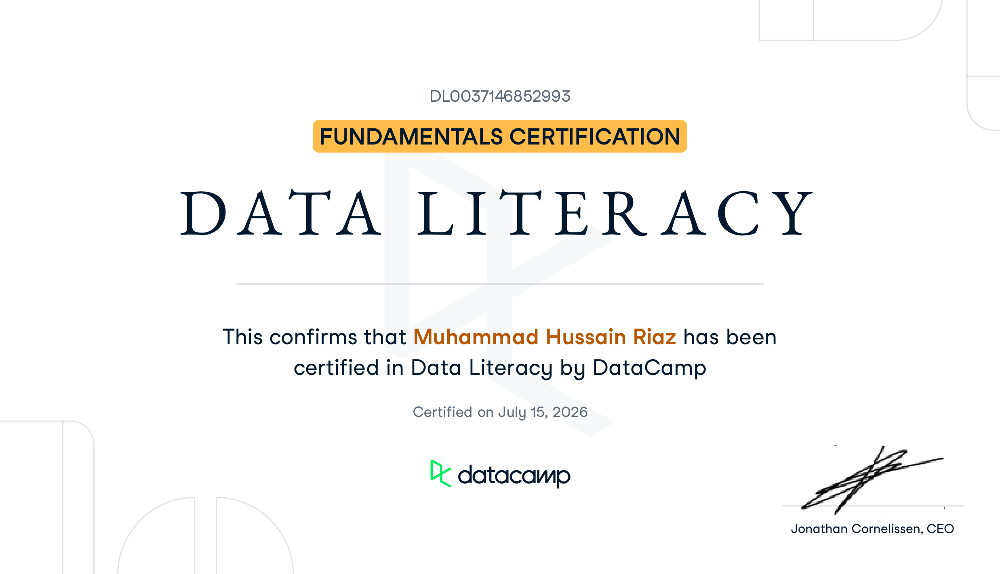
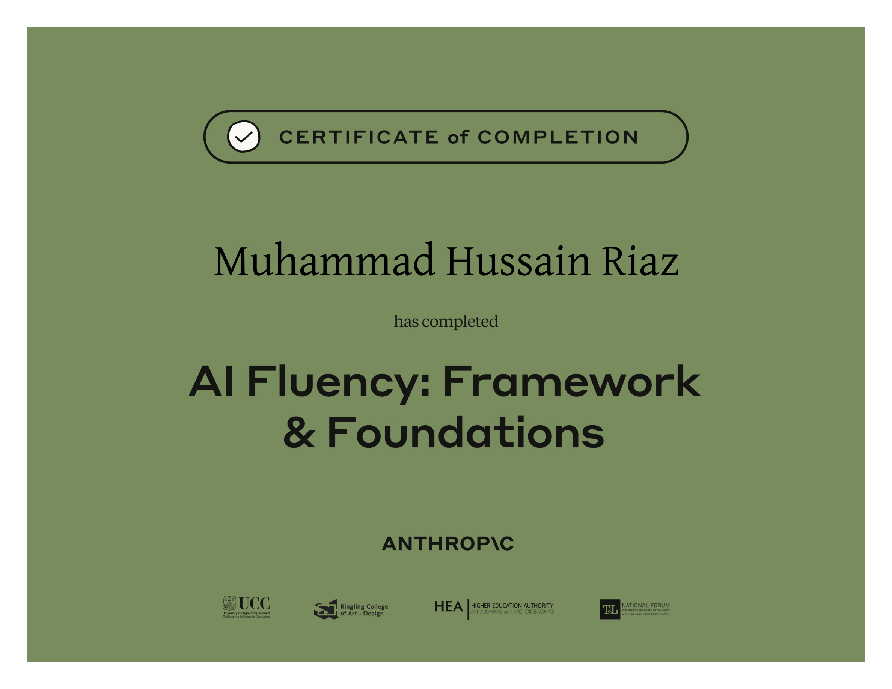
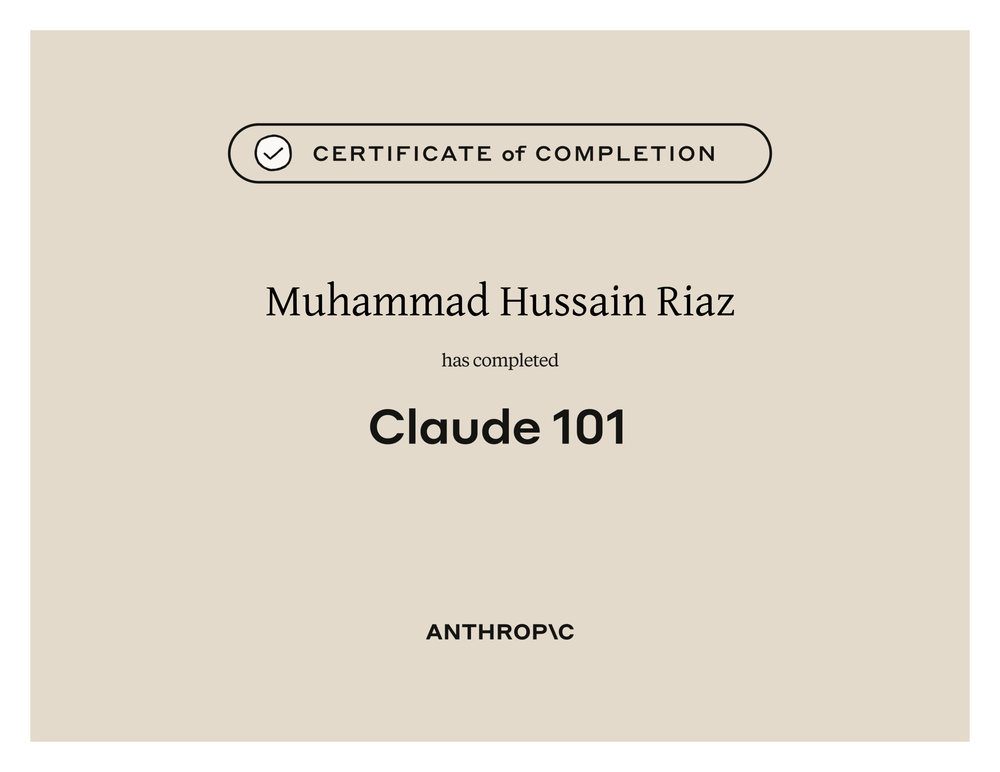

Extracting meaningful information and insights from raw data, a clear communicator who can translate technical findings into decisions non-technical stakeholders can act on.
Whether it's a messy Excel sheet or a half-built SQL schema, I turn it into structured, visual insight, and explain it in plain language, not jargon.
I'm genuinely curious about data—not just technically, but about what it's actually saying. Why does this number look off? What's the trend beneath the surface telling us? That kind of thinking is what pulled me toward analytics and keeps me in it.
🎯 Looking for opportunities: Actively seeking my first Data Analyst or Business Analyst role. Open to internships, full-time positions, and freelance projects.
Asking "Why" to uncover root trends rather than stopping at default counts.
Working seamlessly in teams and communicating data insights with humor and clarity.
Auditing raw datasets and designing relational schemas before drawing conclusions.
University of South Asia
Four years of computer science gave me a strong foundation in programming, algorithms, and analytical thinking.
Curated proficiencies in data analysis, BI, AI frameworks, database engineering, and leadership.
Professional certifications in Python data analysis, data literacy, AI fluency, and enterprise governance.
DataCamp • Certified July 18, 2026
Certified in data governance with knowledge of data privacy, security, and regulatory compliance. Validated via timed technical exams covering governance frameworks, data quality management, and GDPR principles. Gained the ability to assess data integrity, implement privacy processes, and ensure data remains accurate, trustworthy, and secure across its full lifecycle.

DataCamp • Certified July 15, 2026
Certified data professional equipped with foundational data literacy skills to interpret, analyze, and communicate with data effectively. Validated via timed technical exams evaluating data fundamentals, data storytelling, and data-driven decision-making. Mastered the ability to understand data sources, evaluate data quality, interpret data visualizations, and apply analytical thinking to solve real-world business problems.

Anthropic • Skilljar Verification
Certified in advanced AI collaboration using Anthropic's 4D Framework. Equipped to responsibly delegate complex analytical tasks, engineer precise instructions for data processing, and rigorously evaluate AI-generated insights to ensure accuracy and ethical deployment in data-driven environments.
NAVTTC (Prime Minister's Youth Skills Development Program)
Completed the data analysis using Python course under NAVTTC. The course provided me in-depth knowledge of python libraries (Pandas, NumPy, Matplotlib), analysis techniques, data cleaning, and statistical processing.

Anthropic • Skilljar Verification
Mastered foundational interactions with Claude to enhance technical and analytical workflows. Demonstrated the ability to leverage AI assistance for accelerating data processing tasks, optimizing Python and SQL queries, and troubleshooting backend logic.
Sub-divided by focus area and project origin (University vs Personal).
Actively seeking my first Data Analyst or Business Analyst role. Open to full-time positions, internships, and freelance projects. Let's talk!